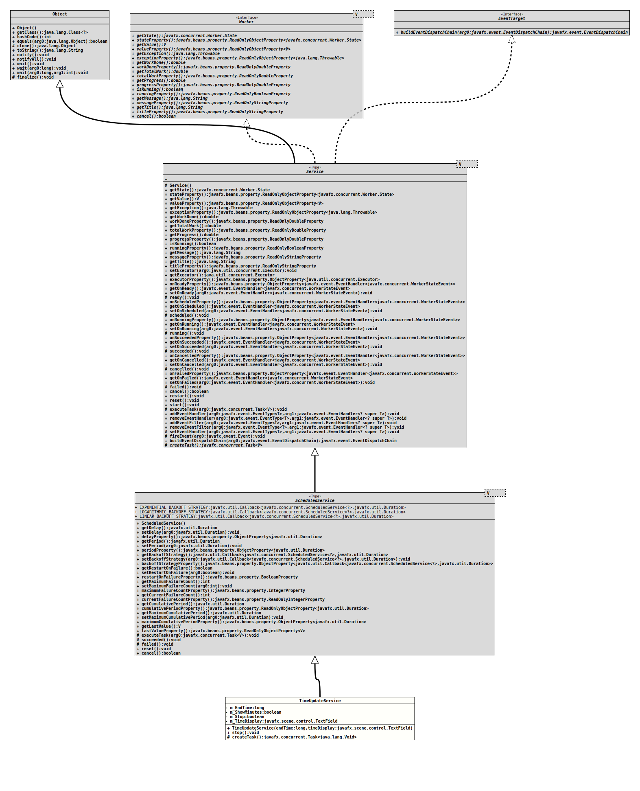

- All Implemented Interfaces:
Worker<Void>,EventTarget
@ClassVersion(sourceVersion="$Id: TimeUpdateService.java 106 2022-01-19 15:53:24Z tquadrat $")
@API(status=STABLE,
since="0.1.0")
public class TimeUpdateService
extends ScheduledService<Void>
The service that will update the time display.
- Author:
- Thomas Thrien (thomas.thrien@tquadrat.org)
- Version:
- $Id: TimeUpdateService.java 106 2022-01-19 15:53:24Z tquadrat $
- Since:
- 0.1.0
- UML Diagram
-

UML Diagram for "org.tquadrat.shootingtimer.TimeUpdateService"
{kind=link}
-
Property Summary
Properties inherited from class javafx.concurrent.ScheduledService
backoffStrategy, cumulativePeriod, currentFailureCount, delay, lastValue, maximumCumulativePeriod, maximumFailureCount, period, restartOnFailure -
Nested Class Summary
Nested ClassesModifier and TypeClassDescriptionprivate classThe task that will update the time display.Nested classes/interfaces inherited from interface javafx.concurrent.Worker
Worker.State -
Field Summary
FieldsModifier and TypeFieldDescriptionprivate final longThe end time.private booleanThe flag that stops the service.private final TextFieldThe reference for the node that displays the time.Fields inherited from class javafx.concurrent.ScheduledService
EXPONENTIAL_BACKOFF_STRATEGY, LINEAR_BACKOFF_STRATEGY, LOGARITHMIC_BACKOFF_STRATEGY -
Constructor Summary
ConstructorsConstructorDescriptionTimeUpdateService(long endTime, TextField timeDisplay) Creates a newTimeUpdateServiceinstance. -
Method Summary
Methods inherited from class javafx.concurrent.ScheduledService
backoffStrategyProperty, cancel, cumulativePeriodProperty, currentFailureCountProperty, delayProperty, executeTask, failed, getBackoffStrategy, getCumulativePeriod, getCurrentFailureCount, getDelay, getLastValue, getMaximumCumulativePeriod, getMaximumFailureCount, getPeriod, getRestartOnFailure, lastValueProperty, maximumCumulativePeriodProperty, maximumFailureCountProperty, periodProperty, reset, restartOnFailureProperty, setBackoffStrategy, setDelay, setMaximumCumulativePeriod, setMaximumFailureCount, setPeriod, setRestartOnFailure, succeededMethods inherited from class javafx.concurrent.Service
addEventFilter, addEventHandler, buildEventDispatchChain, cancelled, exceptionProperty, executorProperty, fireEvent, getException, getExecutor, getMessage, getOnCancelled, getOnFailed, getOnReady, getOnRunning, getOnScheduled, getOnSucceeded, getProgress, getState, getTitle, getTotalWork, getValue, getWorkDone, isRunning, messageProperty, onCancelledProperty, onFailedProperty, onReadyProperty, onRunningProperty, onScheduledProperty, onSucceededProperty, progressProperty, ready, removeEventFilter, removeEventHandler, restart, running, runningProperty, scheduled, setEventHandler, setExecutor, setOnCancelled, setOnFailed, setOnReady, setOnRunning, setOnScheduled, setOnSucceeded, start, stateProperty, titleProperty, totalWorkProperty, valueProperty, workDoneProperty
-
Field Details
-
m_EndTime
The end time. -
m_Stop
The flag that stops the service. -
m_TimeDisplay
The reference for the node that displays the time.
-
-
Constructor Details
-
TimeUpdateService
Creates a newTimeUpdateServiceinstance.- Parameters:
endTime- The end time.timeDisplay- The reference for the node that displays the time.
-
-
Method Details
-
stop
Stops the service. -
createTask
- Specified by:
createTaskin classService<Void>
-